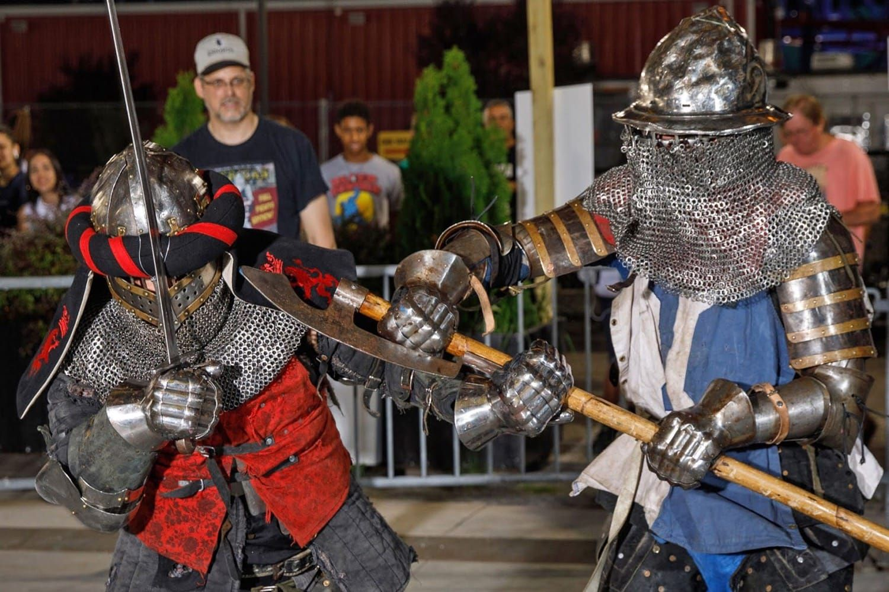
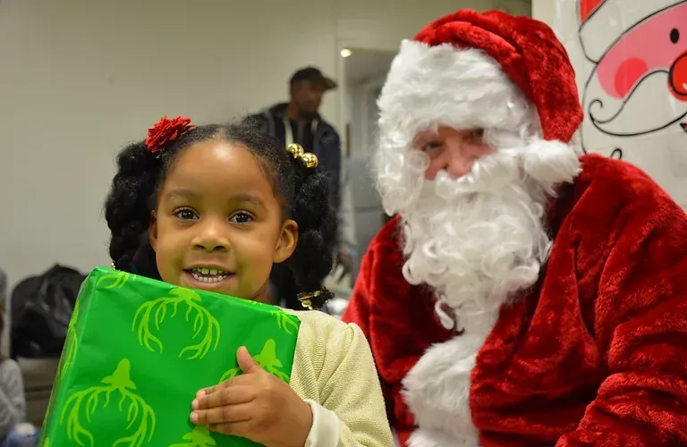
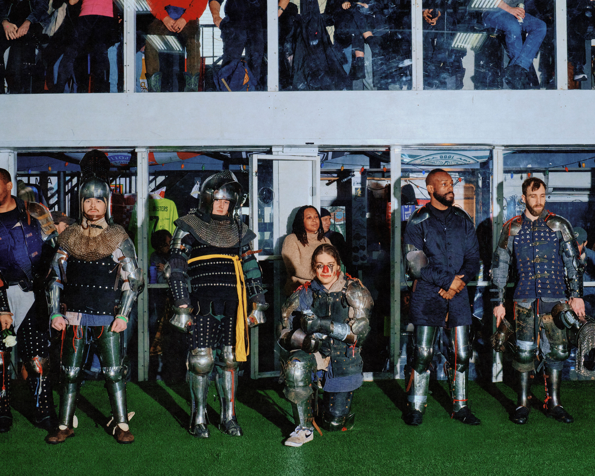
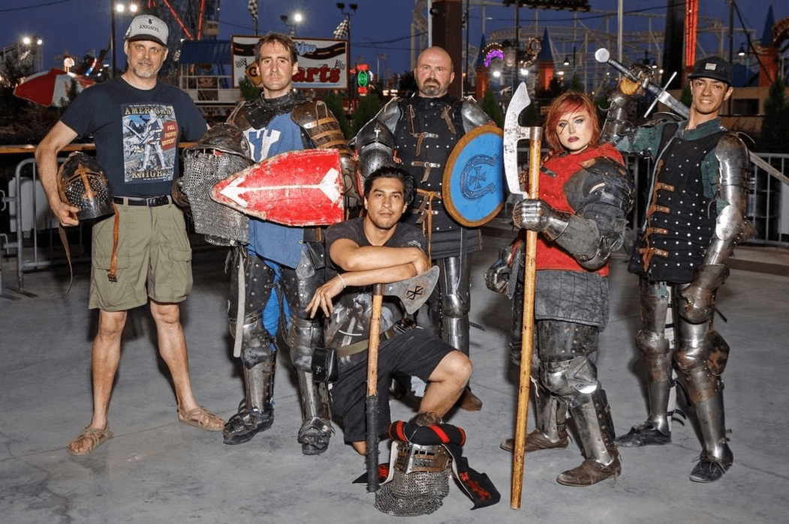

The gift of martial arts
Santa’s Knights’ mission is to bring free martial arts, fitness, and activities to everyone, equitably, transcending socioeconomic, racial, and location boundaries, positively changing children’s and adults’ lives through exposure and lifestyle enhancement.


Every kid deserves an answer.
Each December, children around the world write to Santa. We make sure those letters don’t go unanswered. You read a wish, pick one, and send the gift, and a kid wakes up to something they asked for.

Gladiators NYC, and it costs nothing
Full-contact armored combat and fitness, taught free in Harlem since 2013. The oldest league of its kind in the city.
-
Whoever shows up
Kids, adults, women, veterans. Beginners are the point, not the exception.
-
Six classes a week
Bootcamp, fundamentals, armored practice, and three more.
-
Booked on gladiators.nyc
Schedule and sign-up live there. One account works on both sites.

“One program brings a special type of holiday joy to individuals in need, while the other can help members change their lives entirely by focusing on their health and mental well-being.”
Damion DiGraziaFounder, Santa’s Knights
Ways to help
Seen in


Everything here is free because somebody paid for it.
That somebody is usually a person like you.
